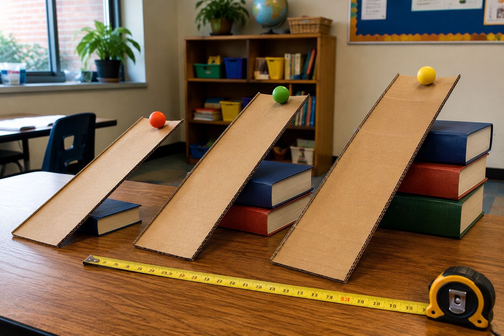
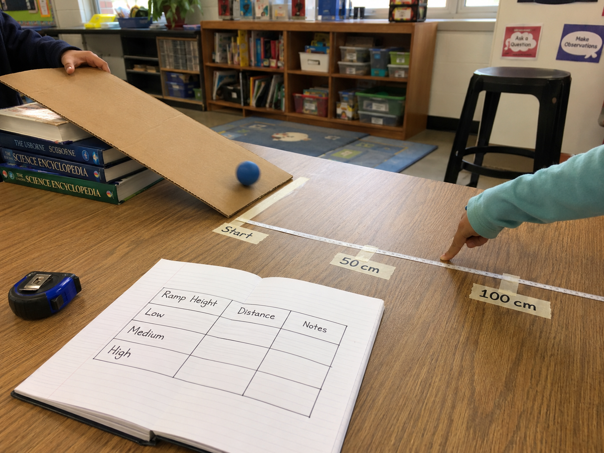
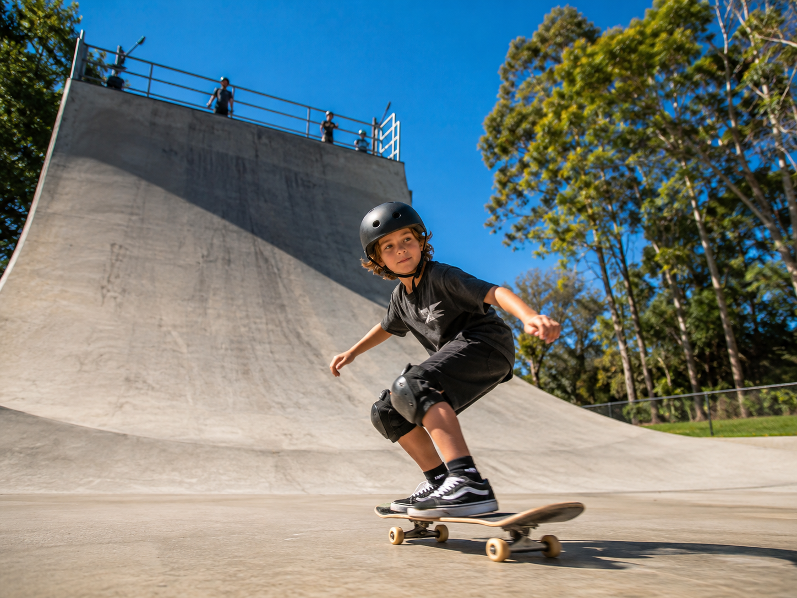

Hold this question in your mind as you investigate. By the end, you should be able to answer it with your own data!
Start here. Learn the words you will use today.
Look at the photo below. Before you read anything, take a minute to just notice what you see and write down any questions that come to mind.

Write at least two observations and one question in your science notebook.
Copy this sentence carefully into your science notebook:
"A stronger force can make an object move faster and travel farther."
Now learn the main science idea.

A forceforceA push or a pull that can change the way an object moves. is any push or pull. Forces are what make things start moving, stop moving, or change direction.
When you push a shopping cart, you're applying a force. When gravity pulls a ball toward the ground, that's a force too.
When you raise the ramp higher, gravity pulls the ball down a steeper slope. That means a stronger force is acting on the ball.
A stronger force makes the ball speedspeedHow fast something moves. More force usually means more speed. up faster and travel a greater distancedistanceHow far something travels from start to finish.. A lower ramp means a weaker force — and a shorter roll.
Scientists don't just watch — they measure. In this investigation, ramp height is your variablevariableThe one thing you change on purpose. Everything else stays the same.. Distance is what you measure. Everything else stays the same.
Recording datadataThe measurements and observations you collect during an investigation. carefully is what turns an experiment into evidence. Numbers don't lie.
Real-World Connection: Engineers who design skate ramps and roller coasters think about force and distance the same way. A steeper ramp = more speed at the bottom.

A stronger force causes greater motion. When the ramp height increases, the force on the ball increases — and the ball travels farther.
This is cause and effect: changing the force causes a change in distance.
Curious? Go Deeper
What's really happening on the ramp? When the ramp is flat, gravity still pulls the ball straight down — but the ramp surface pushes back up. Those two forces are balanced, so the ball doesn't move. When you tilt the ramp, those forces become unbalanced. The forward-pushing part gets bigger as the angle increases, which is why steeper = faster and farther.
Scientists call the measure of how unbalanced the forces are the "net force." You don't need that word yet, but you're already doing net force thinking when you notice that the higher ramp makes the ball go much farther than the low one.
Now test the idea yourself.
You'll need: A stiff piece of cardboard or a flat board for your ramp · 2–4 books to stack · a small ball (any kind) · a measuring tape or meter stick · your science notebook · a pencil
Follow each step carefully. Measure in centimeters. Record your results in your notebook as you go.
Set Up Your Ramp: Lay your cardboard on a flat table. Put one book under one end to prop it up. That's your low ramp. Place a small strip of tape or a piece of paper at the spot where the ramp meets the table — label it Start.
Make a Prediction: Before you test, write this in your notebook: What do you think will happen to the distance when you raise the ramp higher? Write a prediction sentence. Predictions don't have to be right — just honest.
Test Three Heights: For each height below, place the ball at the top of the ramp and release it gently (don't push!). Measure how far it travels from the Start mark. Do each height twice and record both measurements.
1 book
2 books
3–4 books
Fill In Your Data Table: Draw this table in your notebook and fill it in as you test. For each height, write both measurements and any notes you notice (did the ball go straight? did it curve?).
| Ramp Height | Trial 1 (cm) | Trial 2 (cm) | Notes |
|---|---|---|---|
| Low (1 book) | _______ | _______ | __________ |
| Medium (2 books) | _______ | _______ | __________ |
| High (3–4 books) | _______ | _______ | __________ |
Make a Bar Graph: Draw a bar graph in your notebook. Put ramp height on the bottom (Low, Medium, High) and distance in cm on the side. Draw a bar showing how far the ball traveled from each height. You can use either trial or the one you think was most accurate.
Think about it: As you look back at your investigation, consider these questions. You'll use your best thinking in the Write & Explain section.
Tell the story of your investigation from beginning to end — what you set up, what you changed, what you measured, and what you figured out.
Think through each question on your own. Talk it through in your mind — or discuss with someone nearby.
Check what you understand.
Show what you learned.
🔍 Part A — Label the Setup
Draw a simple side-view sketch of the ramp investigation (just a quick diagram — it doesn't need to be perfect). Then label each part using the word bank below.
Word Bank: force · ramp · ramp height · ball · distance · Start
🚀 Part B — Short Answer
Answer in complete sentences. Use your investigation data in your answers.
Use your data to explain: How does changing the ramp height change the ball's motion?
What did you observe?
💡 Start with: "When I raised the ramp, I noticed that…"
What does your data tell you?
💡 Start with: "I know this because when I measured… my data showed…"
Why does that make sense?
💡 Start with: "This makes sense because a stronger force…"
📚 Try to use at least one of these words: force, distance, variable, data
🎨 Part C — Bar Graph
Draw a neat bar graph in your notebook using your data. Put ramp height on the bottom (Low, Medium, High) and distance in centimeters on the side. Give your graph a title and label both axes.
Submit your work on Canvas using one of these options:
Make sure your submission includes all of these: